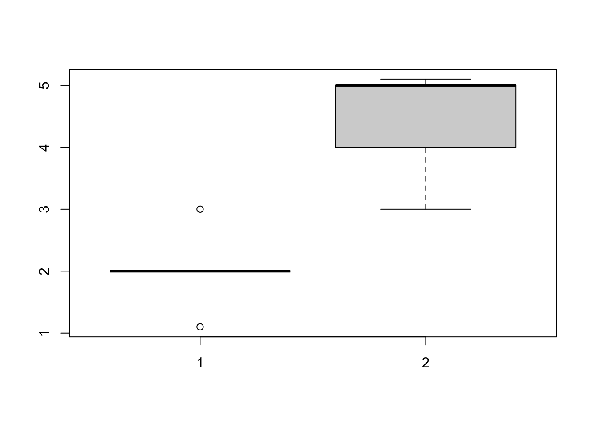

2+2
## [1] 4
5*4
## [1] 20
2^2
## [1] 42 Basic data operations with R
2.1 Data manipulation in R
R works like a calculator:
We can also use functions that perform specific calculations:
sqrt(4)
## [1] 2
sum(c(2,2))
## [1] 4We can assign values/data to variables:
object.name <- 1Note that both operators ‘<-’ or “=” work. Functions in R (e.g. sum(), mean(), etc.) have arguments that control/change their behavior and are also used to pass the data to the function:
mean(x = c(2, 2))
## [1] 2
Help
A list and description of all arguments can be found in the help of a function (which can be accessed via ?mean or if you place the cursor on the function and press F1)
2.1.1 Data types and data structures
There are four important data types in R (there are more but we focus on these 5):
Numeric: 1, 2, 3, 4
Logical: TRUE or FALSE
Characters: “A”, “B”,…
Factors which are characters but we have to tell R explicitly that they are factors
Not a number: NA, NaN (empty value)
Based on the data types we can build data structures which contain either only specific data types or a mixture of data types:
Vector: Several values of one data type, can be created with the
cfunction:c(5, 3, 5, 6) # numeric vector c(TRUE, TRUE, FALSE, TRUE) # logical vector c("A", "B", "C") # character vector as.factor(c("A", "B", "C")) # factor vectorMatrix: two-dimensional data structure of one data type, can be created with the
matrixfunction (we can pass a vector to the matrix function and tell it via arguments how the matrix should be constructed):matrix(c(1, 2, 3, 4, 5, 6), nrow = 3, ncol = 2) ## [,1] [,2] ## [1,] 1 4 ## [2,] 2 5 ## [3,] 3 6Data.frame: Often our data has variables of different types which makes a matrix unsuitable data structure. Data.frames can handle different data types and is organized in columns (one column = one variables) and can be created with the
data.framefunction:data.frame(A = c(1, 2, 3), B = c("A", "B", "C"), C = c(TRUE, FALSE, FALSE)) ## A B C ## 1 1 A TRUE ## 2 2 B FALSE ## 3 3 C FALSE
2.1.2 Data manipulation
A vector is a one dimensional data structure and we can access the values by using [ ]:
vec = c(1, 2, 3, 4, 5)
vec[1] # access first element
## [1] 1
vec[5] # access last element
## [1] 5A data.frame is a two dimensional data structure. Let’s define a data.frame from two vectors:
df = data.frame(
x = c(2,2,2,3,2,2,1), #add column named x with 2 elements
y = c(4,5,5,4,5,3,5) #add a second column named y
)
#Let's see how this looks like:
df
## x y
## 1 2 4
## 2 2 5
## 3 2 5
## 4 3 4
## 5 2 5
## 6 2 3
## 7 1 5Access parts of the data.frame:
df[1,2] #get element in row 1, column 1
## [1] 4
df[7,1] #get element in row 7, column 1
## [1] 1
df[2,] #get row 2
## x y
## 2 2 5
df[,2] #get column 2
## [1] 4 5 5 4 5 3 5
#or use the $ sign to access columns:
df$y
## [1] 4 5 5 4 5 3 5
df[2:4,1:2] #get rows 2 to 4 and only columns 1 and 2
## x y
## 2 2 5
## 3 2 5
## 4 3 4We can also set filters:
df[df$x > 2,] # show only data where x is larger than 2
## x y
## 4 3 4
df[df$y == 5,] #show only data where y equals 5
## x y
## 2 2 5
## 3 2 5
## 5 2 5
## 7 1 5
df[df$y == 5 & df$x == 1,] #show only data where y equals 5 AND x equals 1
## x y
## 7 1 5
df[df$y == 5 | df$x == 3,] #show data where y equals 5 OR x equals 3
## x y
## 2 2 5
## 3 2 5
## 4 3 4
## 5 2 5
## 7 1 5
Logical operators
| Operators | Meaning |
|---|---|
| < | Less than |
| <= | Less than or equal to |
| > | More than |
| >= | More than or equal to |
| == | Equal to |
| != | Not equal to |
| !a | Not a |
| a|b | a or b |
| a & b | a and b |
| isTRUE(a) | Test if a is true |
Add an additional column with NA values:
df$NAs = NA #fills up a new column named NAs with all NA values
df
## x y NAs
## 1 2 4 NA
## 2 2 5 NA
## 3 2 5 NA
## 4 3 4 NA
## 5 2 5 NA
## 6 2 3 NA
## 7 1 5 NA2.1.3 Data analysis workflow
This is a simple version of what you’re going to learn during this course:
Let’s say we measured the size of individuals in two different treatment groups
group1 = c(2,2,2,3,2,2,1.1) group2 = c(4,5,5,4,5,3,5.1) class(group2) ## [1] "numeric"Descriptive statistics and visualization
mean(group1) ## [1] 2.014286 mean(group2) ## [1] 4.442857 boxplot(group1, group2)
Testing for differences. Question: Is there a difference between group1 and group2?
t.test(group1, group2) ## ## Welch Two Sample t-test ## ## data: group1 and group2 ## t = -6.6239, df = 10.628, p-value = 4.413e-05 ## alternative hypothesis: true difference in means is not equal to 0 ## 95 percent confidence interval: ## -3.238992 -1.618151 ## sample estimates: ## mean of x mean of y ## 2.014286 4.442857Interpretation of the results. Individuals in Group 2 were larger than those in group 1 (t test, t = -6.62, p < 0.0001)
In the course we will work a lot with datasets implemented in R or in R packages which can be accessed via their name:
dat = airquality
head(dat)
## Ozone Solar.R Wind Temp Month Day
## 1 41 190 7.4 67 5 1
## 2 36 118 8.0 72 5 2
## 3 12 149 12.6 74 5 3
## 4 18 313 11.5 62 5 4
## 5 NA NA 14.3 56 5 5
## 6 28 NA 14.9 66 5 6